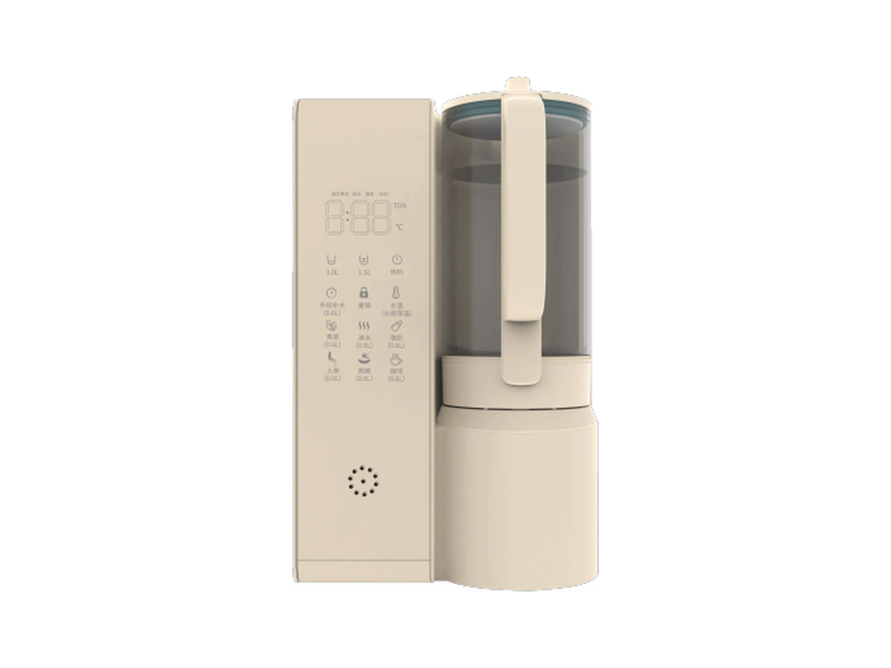

De comptoir
De comptoirRP-C01
RO à chauffage instantané avec carafe amovible
SKU: RP-C01
MOQ : à confirmer lors de la demande
Accueil/Produits/Systèmes de comptoir/ RP-C17

Systèmes de comptoir
Purificateur de comptoir avec théière santé (X802)
RP-C17 — Purificateur de comptoir avec théière santé. Spécification clé : Capacité RO 75 GPD. Les spécifications sont confirmées par modèle et par commande.
RP-C17 est un purificateur de comptoir avec théière santé : un système RO avec théière santé intégrée pour préparer du thé et des boissons aux herbes. Il utilise une seule cartouche RO six en un et un chauffage à ébullition réelle. Approbation chinoise d'utilisation de l'eau et certification 3C ; les certifications internationales sont organisées par commande.
La tension / fréquence est configurable selon le pays de destination. Les autres configurations sont confirmées par commande.
RP-C17 est un purificateur de comptoir avec théière santé (X802) : un système RO avec théière santé intégrée pour préparer du thé et des boissons aux herbes. Il utilise une seule cartouche RO six en un et un chauffage à ébullition réelle, avec un réservoir d'eau brute de 4,5 L et une théière santé de 1,5 L. Il détient l'approbation chinoise d'utilisation de l'eau et la certification 3C ; les certifications internationales sont organisées par commande.
Quelle est la quantité minimale de commande ?
La première commande est de 200 unités par modèle, et les réassorts sont de 500 unités.
Puis-je commander un échantillon avant une commande en volume ?
Oui. Les échantillons sont prêts en 15 jours, et les frais d'échantillon sont remboursés sur votre première commande en gros. Les commandes en gros prennent 40 jours après approbation de l'échantillon et sont expédiées FOB Shenzhen.
Quelles certifications détient-il ?
Agrément chinois pour l'usage de l'eau et certification 3C. Les certifications internationales sont organisées par commande.
8 lignes de spécifications du catalogue ROPureOEM.
| Capacité RO | 75 GPD |
|---|---|
| Réservoir d'eau brute | 4.5 L |
| Capacité de la bouilloire santé | 1.5 L |
| Cartouches | 1 (RO six-en-un) |
| Chauffage | Chauffage à ébullition réelle |
| Ratio eau pure/eau rejetée | 3:1 |
| Dimensions | 323 × 245 × 394 mm |
| Tension / fréquence | Configurable selon le pays de destination |
Les spécifications sont tirées du catalogue ROPureOEM. Lorsqu'une valeur n'est pas encore confirmée, elle est indiquée comme « Confirmé par commande » — nous ne publions pas de chiffres non confirmés.
De comptoirRO à chauffage instantané avec carafe amovible
SKU: RP-C01
MOQ : à confirmer lors de la demande
 De comptoir
De comptoirPurificateur à eau chaude instantanée sans installation
SKU: RP-C03
MOQ : à confirmer lors de la demande
 De comptoir
De comptoirPurificateur RO avec carafe chauffante
SKU: RP-C07
MOQ : à confirmer lors de la demande
 De comptoir
De comptoirDistributeur RO à chauffage instantané
SKU: RP-C13
MOQ : à confirmer lors de la demande